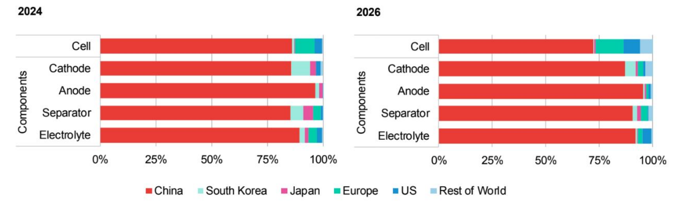

The Battery Industry
How Chinese Entrepreneurs Innovate from Scratch?
Key Takeaways
China leveraged its manufacturing base in consumer electronics batteries to enter the power battery market, choosing battery electric vehicles (BEVs) as the NEV route.
Rather than importing Japanese production lines like Korea did, Chinese firms adapted to local conditions by substituting labor-intensive methods and domestically-produced equipment, dramatically reducing costs (e.g., BYD cut lithium-ion cell prices from USD 8–10 to USD 2.5).
Through large-scale production, R&D investment, and backward spillovers from foreign customers, Chinese battery makers rapidly advanced from low-quality producers to global leaders (e.g., CATL’s two lighthouse factories).
China’s innovation pathway is “from production to paper”—learning by doing and accumulating know-how through manufacturing practice, contrasting with the U.S. approach of theory-first innovation.
Background
Battery: Heart of electric vehicles
If the heart of conventional vehicles is the engine, then for new energy vehicles (NEVs), it is the power battery. Most of the technological bottlenecks of NEVs are concentrated on the battery; consumer concerns are also closely tied to battery performance, e.g., unexpected breakdowns, spontaneous combustion, and short driving range. Moreover, power batteries currently account for approximately 40%–60% of a NEV’s total cost.
China is dominating the battery market
In 2023, Chinese companies held a 63.5% share of global EV battery installations, and 6 out of the world’s top 10 power-battery companies were Chinese. China is currently dominant in the manufacturing of every battery component.
- Manufacturing capacity by country

- Global manufacturing and trade flows of key components

A debate over independent innovation: technology diffusion is not that easy…
There was hardly any development in China’s automobile industry until the 1980s. At that time, automotive technologies were monopolized by developed countries like Japan, Germany and the US. There was once a heated policy debate over whether China should prioritize independent innovation. Most people thought China could specialize in labor-intensive manufacturing, and learn technologies from developed countries through technology diffusion.
However, learning technologies from developed countries was not that easy in reality, and it also couldn’t support sustainable technological progress. The automotive sector in developed countries had matured over a century, with patents and standards tightly controlled by multinational firms and licensed at high cost. Domestic companies lacked the requisite technological base, talent, and equipment, and they had to bypass a large amount of existing intellectual property, leaving very limited room for catch-up. In this context, China implemented quid pro quo policies: Foreign automakers are mandated to set up joint ventures(JVs) with domestic automakers to facilitate technology transfer (the quid), in order to produce and sell cars in China, (the quo). However, most of the domestic partners of JVs were confined to the role of mere drawing executors, with little participation in product development and technological innovation. At that time, most of the domestic partner of JVs didn’t even have the ability to build the complete automobile product. For example, a report finds that Chinese engineers at a JV automaker had identified an error in a nut’s design drawing and proposed a correction, but the foreign partner refused; even when the foreign side acknowledged the mistake, any revision to the drawing had to be made by the overseas headquarters. The technological gap between China and the leading automotive nations was substantial, and technologies acquired through quid pro quo were quite limited.
Also, relative to developed countries, China has more incentives to innovate new energy vehicles (NEVs). Technologies required for conventional vehicles versus NEVs are very different: one focuses on engines (mechanical engineering), whereas the other focuses on power batteries (primarily electrochemistry). Incumbents in developed countries lack enough incentives to innovate NEVs, for they’ve invested much sunk cost on conventional vehicles ——Conventional automakers have accumulated substantial capital, talent, and equipment in core hardware such as engines and transmissions, yet many of these modules and associated technologies are not employed in NEVs. Advancing NEVs would definitely threaten entrenched vested interests, making it a key barrier to promote NEV innovation. By contrast, Chinese firms have less path dependence, and are more willing to do “creative destruction”.
A further impetus was energy security. China seeks to reduce dependence on oil. In 2023, its external dependence on oil reached 71.2%. Estimates suggest that oil consumption by conventional automobiles alone could equal China’s combined domestic production and imports by 2050. Therefore, developing NEVs is an important strategy to mitigate the energy security issue.
Taking into account all these factors, China ultimately rolled out policies to support independent innovation, catalyzing the growth of its EV industry. In retrospect, this seems to be a wise choice: rising domestic labor costs have eroded the earlier “comparative advantage”, and recurring technology “chokepoint” pressures with increasing geopolitical conflicts have further constrained technology diffusion.
Innovate from scratch: How China develops battery technologies
China’s resolve to support independent innovation translates into a set of consistent policies. In 2009, the “Ten Cities, Thousand Vehicles” program was launched, a strong push given the scale of China’s auto market at the time. To reduce resistance, policymakers initially bypassed the main battlefield of passenger cars and focused on other vehicle types like electric buses. This approach expanded room for trial and error: buses operate at lower speeds on fixed routes, and operational failures have less influence on social sentiment, compared with passenger cars. Subsequently, support shifted toward passenger vehicles, and in 2010 the government began subsidizing individual purchases of NEVs.
This policy environment encouraged enthusiastic new entrants into the NEV industry. However, in terms of technologies, China still had limited research base and manufacturing capacity. Therefore, it’s worth thinking about why China chose to develop battery electric vehicles, and how China advanced the technologies to reach the global frontier. At the time, three principal NEV routes were under consideration for global NEV developers: (1) advanced diesel vehicles and hybrid electric vehicles (favored in Europe and the United States); (2) fuel cell vehicles (backed by continued investment in Japan); and (3) pure battery electric vehicles (BEVs) using energy‐storage batteries. Leading international automakers tended to prefer the first two because their industrial chains align closely with the conventional automotive value chain. In China, by contrast, the third route turned out to have fast growth, consistent with its domestic conditions: China’s scientific research on lithium batteries began roughly in step with developed countries, and China also has some manufacturing experience, for some firms already produced batteries for consumer electronics. Many of today’s top Chinese power battery manufacturers have a history of producing consumer electronics batteries. For example, BYD, one of the largest power battery manufacturers, has contract electronics manufacturing contribute roughly one quarter of its total revenue.
Despite its manufacturing base in consumer batteries, China still lagged behind foreign leaders in lithium-battery manufacturing. After Sony commercialized the lithium battery, Japanese firms dominated the technological frontier and rapidly built a complete value chain. As the technology diffused to Korea and China, there was an interesting diverging pattern of technology learning. Korea’s strategy was to purchase Japanese equipment, disassemble it, and replicate it; the resulting products were essentially equivalent but produced at much lower cost. Chinese firms, however, often lacked the capital to buy Japanese production lines. In response, many Chinese entrepreneurs substituted manual, labor-intensive methods for fully automated Japanese production lines and used domestically-produced equipment, developing a pathway suited to China’s conditions. The examples below would further illustrate this process. This exactly mirrors the local-adaptation story in my solar PV report: prioritize lower-cost products, replace imported machinery with domestic alternatives, and substitutes automated production line with labor-intensive manufacturing.
One vivid example is from BYD. Founded in 1994, BYD began with batteries. At the time, Japan’s battery-manufacturing technology was far ahead. BYD’s founder, Wang Chuanfu decomposed fully automated Japanese production lines into dozens of discrete process steps and replaced machines with workers using jigs and fixtures. He used this approach first to produce nickel-cadmium batteries and later lithium-ion batteries. While this may sound implausible, Chinese industry often embraces the pragmatic maxim “It doesn’t matter whether a cat is black or white; if it catches mice, it’s a good cat” (a Deng Xiaoping aphorism), devising methods suited to local conditions to solve problems. Another interesting example is from the early phase of BYD’s lithium-ion business. Cells suffered from swelling and unstable quality. The standard fix was to build dry rooms, but at the time they were extremely expensive and Japan monopolized the relevant technology and equipment. Since the goal was simply to reduce ambient moisture, Wang proposed another route: fill a room with large amounts of desiccant, seal the door during operations, and transfer cells in and out only through a small window. Under these conditions, humidity dropped markedly. They further found that humans would release substantial moisture, so workers were required to wear masks; the swelling issue improved significantly in this way. This kind of engineering innovation, refined over time, was widely emulated by Chinese lithium-battery factories. At the time, lithium-ion cells sold on the international market for USD 8–10 each; using the “workers plus jigs” method, BYD cut the price to USD 2.5. Although the quality of Chinese products was lower, and they were not able to sell to high-end brands like Samsung, there was domestic demand: For Chinese mobile-phone and laptop makers, these products were more affordable choices.
In the start-up stage of China’s lithium-battery industry, when capital was scarce and Japanese technology remained dominant, such engineering solutions enabled Chinese firms to survive and pursue technological development; but now, Chinese products have become the suppliers for most of the high-end brands, and the production lines are also highly automatic and intelligent. For example, the two lighthouse factories (an accolade established by the World Economic Forum and McKinsey in 2018 to recognize the highest level of smart manufacturing and digitalization) in the global battery industry, are both belonging to the Chinese battery maker CATL(Contemporary Amperex Technology Co., Limited, 宁德时代).
Adaptation to China’s conditions was required not only in manufacturing but also in sales and service. At the time, the majority of Chinese population was still undereducated, and many Chinese consumers distrusted new technologies; rumors circulated that electric vehicles emitted radiation that could cause infertility. Chinese automakers undertook extensive public education, using professional test instruments and side-by-side demonstrations (comparing a hair dryer, a microwave oven, and an electric vehicle), to show that EV electromagnetic emissions were lower than those of common household appliances. This reminds me of another case of local market adaptation in the early phase Chinese manufacturing (though outside the energy-transition domain, may help understand how developing economies adapt new technologies to local markets): in the early 2000s, the performance of domestically produced trucks was inferior compared with imported ones, but they were easier to use, and were sold for only one-fifth the price of imported models; also, Chinese truck makers excelled in after-sales service, establishing repair points in almost every county, as well as conducting extensive consumer education.
In later phases of the NEV industry’s development, China advanced technologies through both R&D and production practice. Contrary to the earlier perception that Chinese manufacturing invested little in research and had limited technological content, the R&D investment of leading Chinese manufacturers is amazing: in 2022, CATL allocated RMB 15.5 billion (US$ 2.18 billion) to R&D and employed more than 16,000 researchers. Beyond laboratory research, however, “learning by doing” has been even more critical in batteries. Battery manufacturing contains substantial “invisible knowledge” bridging theory and practice, which require cumulative manufacturing experience. For example, the production process of batteries is highly complex, governed by hundreds of adjustable parameters that must be continuously tuned and optimized, which requires much experience to accommodate subtle cell-to-cell variations.
Besides large-scale production, learning by doing is also accelerated by backward spillovers from foreign customers. For example, CATL’s first major breakthrough emerged from its collaboration with BMW, where the two firms assembled a joint development team to interpret and implement battery manufacturing standards. Although CATL lacked automotive experience at the time, the partnership taught it to design and build packs to vehicle-level requirements, shifting its mindset from battery maker to car-centric supplier. A second example is EVE Energy (Yiwei Lileng, 亿纬锂能). In the past, it always assumed the bottom-side weld marks were unavoidable. In meeting the stringent quality demands of a top global power-tool manufacturer, EVE Energy forced a deeper investigation, and found that the issue hinged on the consistency of weld tensile force, which later led to its technical improvements. Beyond product performance, international customers’ factory audits, which conducted against rigorous standards, also taught Chinese manufacturers production standards, management practices, and project interface practices.
To sum up, the way China innovates is more “from production to paper”, whereas the U.S. is the reverse. Chinese manufacturers learn from scratch, using a local-adaptation way to produce and sell, accumulating know-how through large-scale production, as well as backward spillovers from foreign customers.